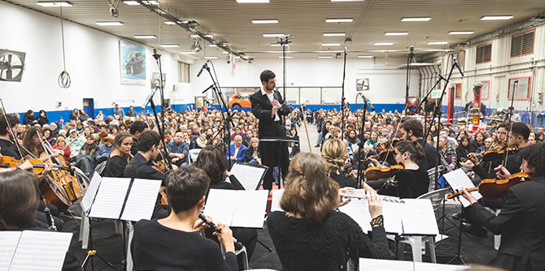
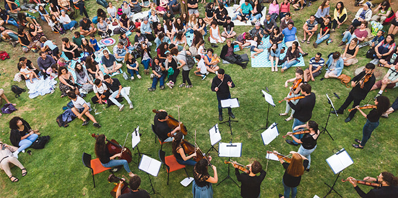
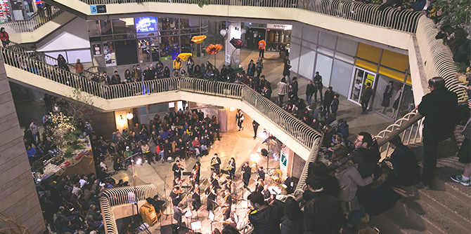

צילום: ילנה קווטני, באדיבות תזמורת הרחוב הירושלמית
לכל אירועי 2022 הקליקו כאן >>
"סדרתרבות" נולדה מתוך הרצון לסייע למוסדות תרבות ולמינהלים קהילתיים בשכונות פריפריה בירושלים להתאושש ממגפת הקורונה ולהגיע לקהלים חדשים שבדרך כלל אינם נהנים מאירועי תרבות מסוג זה, שמרביתם יתקיימו במרחב הציבורי ויהיו פתוחים לקהל הרחב. כמו כן, סדרת האירועים תסייע לתמיכה באמנים ירושלמים המייצגים את העושר והמגוון התרבותי של העיר, ולקידום החוסן הקהילתי.
הסדרה תקיף את מרבית שכונות העיר ואת כל האוכלוסיות המתגוררות בה: מזרח העיר ומערבה, שכונות הפריפריה ומוסדות תרבות ידועים, החברה החרדית, החברה הערבית, החברה הדתית-לאומית והחברה החילונית.
בין השאר יתקיימו קונצרטים פתוחים של תזמורת הרחוב הירושלמית בגן סן סימון בגוננים, בפארק המסילה, בח'רבת ארזה בשכונת גילה ובגינות קהילתיות של מינהלים קהילתיים רבים ברחבי העיר; אירועי מחול ומוזיקה המותאמים לחברה הערבית במזרח העיר; אירועי מוזיקה בשכונת נווה יעקב המותאמים לאוכלוסייה החרדית; סיורים תיאטרליים למשפחות ברובע היהודי; אירועי אמנות למשפחות ולמבוגרים במוזיאון על התפר; ניגוני סליחות למבוגרים וסדנאות מוזיקה מזרחית לילדים בעין יעל; אירועי מחול ומוזיקה במוזיאון המדע ואירועי פואטרי סלאם ב"מפעל" ובמתחם הקרוב אליו; וכן תערוכות אוכל בשכונת מוסררה וקונצרט "פטר והזאב" באקווריום ישראל.
 צילום: ילנה קווטני, באדיבות תזמורת הרחוב הירושלמית
באירועי התרבות ברחבי העיר משתתפים רבים מבוגרי
תוכנית מנדל למנהיגות בתרבות יהודית, ובהם: יאיר כוכב, יהודית שלוסברג יוגב וגלעד ואקנין במופעי מוזיקה וסליחות בעין יעל; עמיחי חסון, אוריין שוקרון, נטע מייזלס ופורת סלומון במחזור שירה ומיצג ב״מפעל״; יעל גידניאן ויאיר הראל במופע שירי ערש במוזיאון על התפר; תמר מאיר במופע סיפור בנושא של ספרות ילדים במוזיאון חצר היישוב הישן; נטע אלקיים ואוריין שוקרון במוזיאון המדע; ואבישי וול, רחל קשת, שרון מייבסקי, עודד מזור, ג'ני רוזנפלד ונועם ענבר בטחנת הקמח המתחדשת של ימין משה.
"סדרתרבות" מתקיימת השנה, ותתקיים גם בשנה באה, בתמיכה בהיקף של כמיליון שקלים מקרן ג'ק, ג'וזף ומורטון מנדל – תוצאה של שיתוף פעולה בינה ובין הקרן לירושלים. "זהו שתוף פעולה פורה והדוק שהתפתח עוד בזמן שיא המגפה ובמענה לצרכים המיידים והחיוניים ביותר של תושבי העיר. כעת, עם היציאה לשגרה חדשה, מוקדש המאמץ לחיזוק חיי התרבות והקהילה בירושלים", אומר שי דורון, נשיא הקרן לירושלים.
"'סדרתרבות' תיתן מענה להרבה משפחות ואוכלוסיות בעיר", אומרת
רות דיסקין, מנהלת מחלקת הפרויקטים בקרן לירושלים ומי שאחראית על יצירת התוכן של הסדרה, בשיתוף עם
רונן יצחקי, מנכ"ל מיזם התרבות "בין שמיים וארץ" ובוגר תוכנית מנדל למנהיגות בתרבות יהודית, וכן עם בוגרים נוספים של התוכנית. "אלו אוכלוסיות שייתכן שלא היו נחשפות לאירועים מגוונים ומרובים כל כך. האירועים נבחרו והופקו בתשומת לב רבה ומתוך התאמה, חשיבה ורגישות תרבותית", אמרה דיסקין.

צילום: ילנה קווטני, באדיבות תזמורת הרחוב הירושלמית
{kind=link}
{kind=link}
{kind=link}